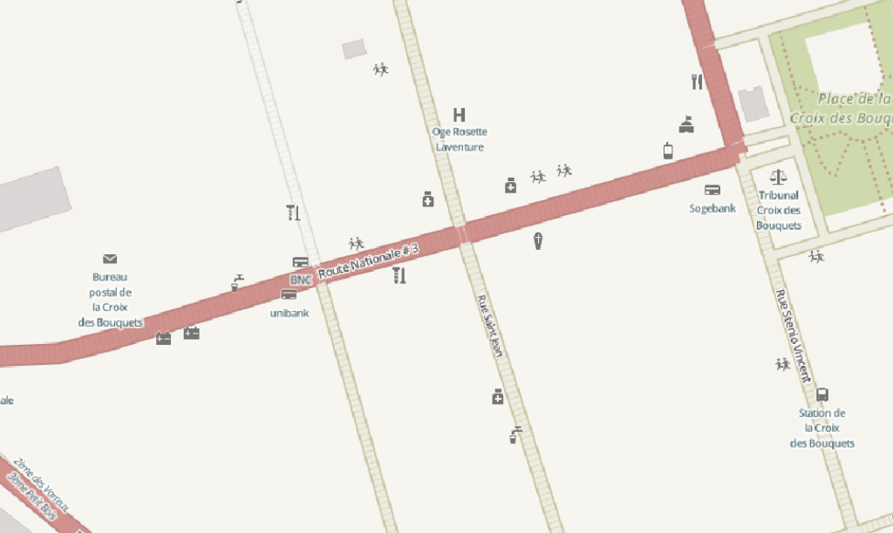
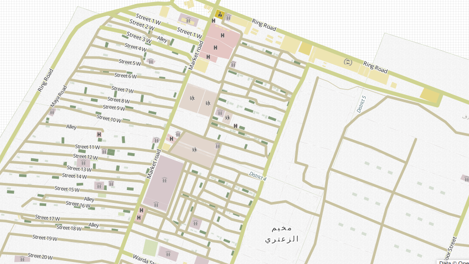

Web Base Map for Humanitarian
and Lower-Income Countries' Contexts
http://github.com/skorasaurus/hotatnacis2013
by Yohan boniface / @infomagicien
by Will Skora @skorasaurus
@wwwolford, @jaakkoh, and sev menard.
OSM: OpenStreetMap The wikipedia of geographic data - anyone can contribute and utilize as they wish (w/ attribution)
Data from imports (TIGER), aerial imagery, local knowledge, and GPS Traces

test
other geodata non-exist, outdated, or $ .
In crises, map data changed or needs to be mapped
* Display what is relevant
* Restyling Highways
Initial POIs
hospitals, Govt buildings, schools
Icons from Noun Project | Maki | Custom (CC0)
http://hotosm.github.io/HDM-CartoCSS/
pretty colors: light and pastel
Styling highways by :
surface
classification
condition (smoothness)

Making web maps was hard
designed w/ love in tilemill and carto
Coded in Carto, can be shared and adapted
in print or digitally.

future: additional icons + classification (intermittent waterways, refugee camps)
Vectors ? WMS layer ? * Profit ?